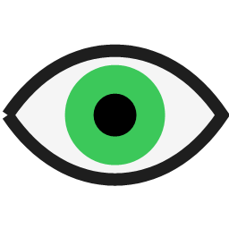

EqEyes
A free companion to EQSidekick. The game log says what happened; EqEyes says what your screen shows right now: health, targets, the group, spell gems. Triggers can then act on that too.
Download for Windows Release notes and other downloadsFree. Updates itself from GitHub. Windows may show a SmartScreen warning the first time you install it.
What it doesn't do. EqEyes only looks at the game window, the same picture you see, and reads the game's own UI layout files to know where each window is. It never reads the game's memory, never changes the game, never draws on it, and never presses a key.
What it reads
You
Your health, mana and endurance, and your group roles: main tank, main assist, puller, NPC marker.
Your target
Its health, its buffs and debuffs, and the moment the target changes. Who it is on (you, a group member or somebody else), the moment it turns, and whether it is the main assist's target.
Your group
Each member's health, who is lowest, and how many are under a given health.
Extended target
Each slot's health and role: the main assist's target, the tank's, an add on the hate list.
Spells
The cast bar, and which spell gems are ready, which are down, and which are empty.
Honest about gaps
When a window is hidden or can't be read, it says "unknown" instead of guessing.
Triggers on what's on screen
EqEyes writes what it reads to a plain text file beside your game log, one line each time something changes. In EQSidekick's Triggers window, the Screen tab holds triggers that read that file, apart from the Game log tab, so a screen trigger can never go off on something said in a tell. Some examples:
- Pull: for the puller, says "Pull" once the camp is clear and everyone in the group has at least 80% health.
- Add: says "Add" when a new mob lands on your extended target that isn't the main assist's.
- Heal: speaks up when the lowest health in the group drops under a level you choose.
- Turned: warns when the main assist's mob turns away from the tank, or onto you.
All four, and a few more, are in a demo package to try:
Download the demo triggersIn EQSidekick, open Triggers… and import the file: it goes in the Screen tab. Switch the "EqEyes Demo" folder On, and any part of it Off that you don't want. Needs EQSidekick 0.3.60 and EqEyes 0.3.5 or later. The triggers about who your target is on need the game's Target's Target window open. Each trigger's comment says what it reads and how to change it.
Want to hear your best headshots and assassinates, spell hits and heals? Those come from the game log, so they work without EqEyes: get the damage and heals triggers from the EQSidekick page.
A Game log trigger can also ask about the screen with Only when, such as "only when my mana is under 30%", and a trigger folder named after a group role runs only while you have that role. Screen triggers are shared like any other triggers.
Getting started
- Install EQSidekick 0.3.55 or later, if you haven't already.
- Download and run the EqEyes installer above. It installs for your Windows user only and needs no administrator.
- That's all. EqEyes starts with Windows as an eye icon in the notification area, waits for the game, and follows whichever character you log in. Running several EverQuest windows? Each one is read as its own character, with its own file. The icon is grey while it waits, green while it reads the game, and amber when something can't be read. Right-click it for Status….
Needs Windows 10 version 2004 or later, and the game's log turned on (/log on) in each window. Play the game in a window, not minimized; other
windows may cover it. EqEyes is made for the game's default UI skin, and reads the windows you have open: player,
target, target's target, group, extended target and spell gems. With a custom skin, or a window closed, those parts read as "unknown".
Privacy
Everything EqEyes reads stays on your PC, in the text file beside your game log. It connects to nothing except GitHub, to check for updates.